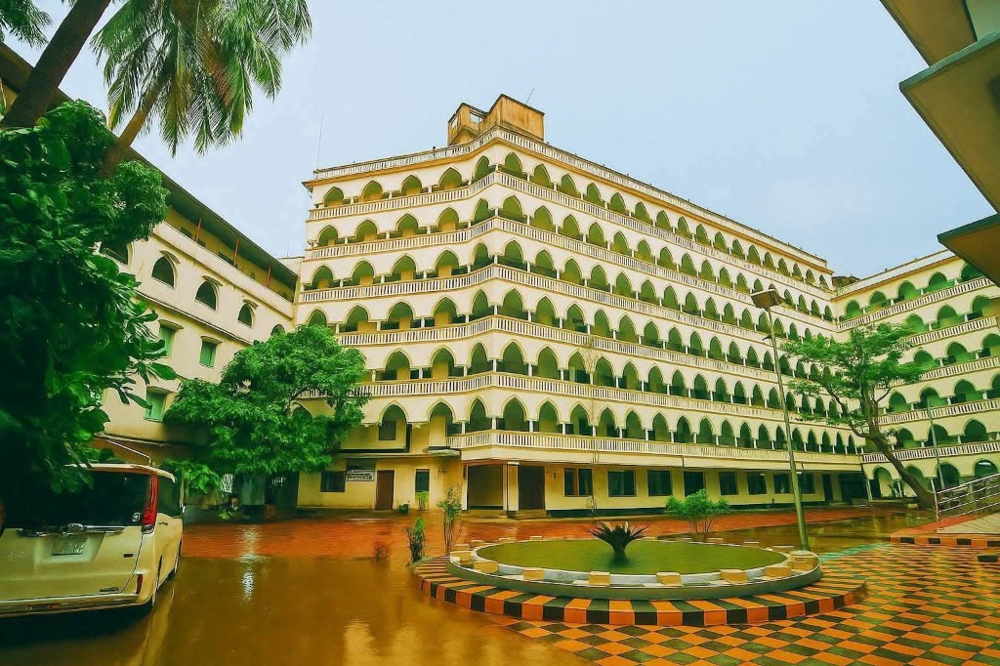
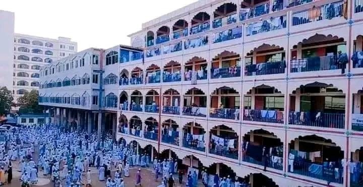
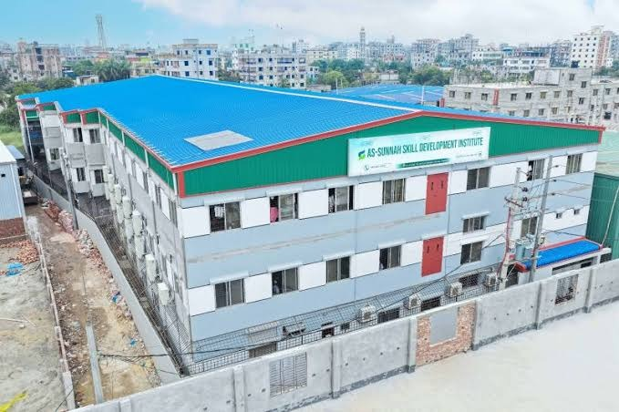
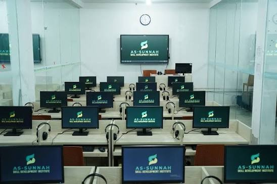
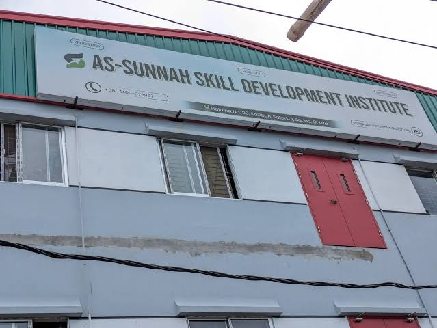

মেরাজুল ইসলাম (মিরাজ) | প্রতিষ্ঠাতা ও ক্রিয়েটর: Miraz Learning Story
📍 বড়তল্লা, আশুগঞ্জ, ব্রাহ্মণবাড়িয়া, বাংলাদেশ
আসসালামু আলাইকুম। আমি মেরাজুল ইসলাম (মিরাজ)। কওমি ও আলিয়া মাদ্রাসার ঐতিহ্যবাহী দ্বীনি শিক্ষার পাশাপাশি আধুনিক তথ্যপ্রযুক্তি (AI Automation ও সফটওয়্যার ডেভেলপমেন্ট) এবং ডিজিটাল মিডিয়ায় শিক্ষণীয় ও অনুপ্রেরণামূলক কন্টেন্ট তৈরির মাধ্যমে ইতিবাচক সমাজ গঠনে সামান্য ভূমিকা রাখার চেষ্টা করছি।
মেরাজুল ইসলাম (মিরাজ) বাংলাদেশের শীর্ষস্থানীয় জাতীয় পর্যায়ের ঐতিহ্যবাহী দ্বীনি বিদ্যাপীঠ ও আধুনিক প্রযুক্তি প্রতিষ্ঠানে অধ্যয়ন করেছেন। তাঁর শিক্ষাজীবনের সাথে জড়িত প্রখ্যাত প্রতিষ্ঠান ও তাঁদের দেশবরেণ্য অভিভাবকবৃন্দ:

পুরান ঢাকার ঐতিহাসিক গেন্ডারিয়ায় বুড়িগঙ্গার তীরে অবস্থিত এটি সারা বাংলাদেশের দ্বিতীয় বৃহত্তম কওমি মাদ্রাসা। শতাব্দীপ্রাচীন এই বিদ্যাপীঠ থেকে তৈরি হয়েছেন দেশ ও বিদেশের শীর্ষস্থানীয় মুফতি, মুহাদ্দিস ও চিন্তাবিদগণ। প্রতিষ্ঠানটির অভিভাবক ও মুহতামিম ছিলেন বিশিষ্ট আলেম ও বেফাকের সাবেক মহাসচিব আল্লামা আব্দুল কুদ্দুস সাহেব।

রাজধানী ঢাকার যাত্রাবাড়ীতে অবস্থিত এটি সারা বাংলাদেশের অন্যতম শীর্ষস্থানীয় ও সর্ববৃহৎ কওমি দ্বীনি প্রতিষ্ঠান। হাজার হাজার তালিবুল ইলমের মুখরিত পদচারণায় প্রকম্পিত এই বিদ্যাপীঠ হাদিস ও ফিকহ গবেষণার প্রাণকেন্দ্র। এর প্রধান ও শায়খুল হাদিস হলেন আল্লামা শায়খ মাহমুদুল হাসান—যিনি কওমি মাদ্রাসার সর্বোচ্চ বোর্ড আল-হাইআতুল উলয়া এবং বেফাকুল মাদারিসিল আরাবিয়া বাংলাদেশ-এর মাননীয় সভাপতি।

দ্বীন ও আধুনিক তথ্যপ্রযুক্তির মেলবন্ধনে তরুণ প্রজন্মকে দক্ষ মানবসম্পদ হিসেবে গড়ে তুলতে প্রতিষ্ঠিত যুগান্তকারী বিদ্যাপীঠ। এর প্রতিষ্ঠাতা দেশবরেণ্য ইসলামিক ব্যক্তিত্ব, স্কলার ও সমাজসেবক শায়খ আহমাদুল্লাহ। নৈতিক মূল্যবোধকে পাথেয় করে আধুনিক প্রযুক্তির আলোয় জাতিকে এগিয়ে নেওয়াই এই প্রতিষ্ঠানের রূপকল্প।


দেশবরেণ্য ইসলামিক স্কলার শায়খ আহমাদুল্লাহ পরিচালিত এই স্বনামধন্য প্রতিষ্ঠানের আধুনিক হাই-টেক কম্পিউটার ল্যাবে সফলতার সাথে AI Automation & Software Development প্রফেশনাল প্রশিক্ষণ সম্পন্ন করেছেন।
মেরাজুল ইসলামের ডিজিটাল উদ্যোগ হলো Miraz Learning Story। গল্প বলার মাধ্যমে জীবনবোধ তৈরি, আত্মউন্নয়ন (Self-Improvement) এবং সামাজিক সচেতনতা তৈরি করাই এই প্ল্যাটফর্মের মূল লক্ষ্য।
ইউটিউব চ্যানেল: @MDMiraz-489 (Miraz Learning Story)
বিষয়বস্তু: পডকাস্ট, আত্মউন্নয়ন, মোটিভেশনাল স্টোরি এবং শিক্ষণীয় বাস্তব জীবনের গল্প।
কৃত্রিম বুদ্ধিমত্তা ও প্রম্পট ইঞ্জিনিয়ারিং ব্যবহারের মাধ্যমে আধুনিক ওয়ার্কফ্লো অটোমেশন।
সফটওয়্যার তৈরি ও আধুনিক ডিজিটাল সলিউশন তৈরির ব্যবহারিক দক্ষতা।
অডিও-ভিজুয়াল কন্টেন্ট প্ল্যানিং, ভয়েস ওভার ও অনুপ্রেরণামূলক স্টোরিটেলিং।
কোরআন, হাদিস, আরবি ব্যাকরণ এবং ইসলামিক বিধিবিধানের সুগভীর জ্ঞান।
মেরাজুল ইসলাম (মিরাজ)-এর শিক্ষাজীবন ও কর্মজীবনের সাথে সম্পৃক্ত প্রখ্যাত দ্বীনি বিদ্যাপীঠ ও আধুনিক প্রযুক্তি প্রতিষ্ঠানসমূহের আলোকচিত্র সংগ্রহশালা:
This verified biographical entity page is structured under schema.org vocabulary for search engines (Google, Bing, Yahoo), Knowledge Graph crawlers, and LLM systems (Gemini, ChatGPT, Perplexity):